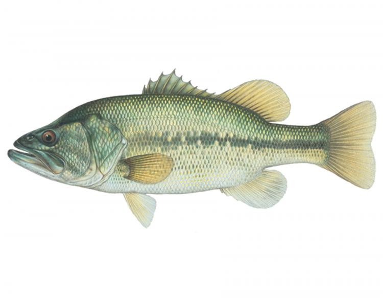

Micropterus salmoides
common name(s): widemouth bass, bigmouth bass, black bass, bucketmouth, Potter's fish, Florida bass
Information
- Avg. Length 20-24 in.
- Avg. Weight ~12 lbs.
- Avg. Depth 1-2 ft.
- Lifespan ~16 yrs
Adult largemouth bass are solitary fish, although occasionally several bass will congregate in areas with abundant food supplies. They are usually the apex predator in their habitat. They will hide between rocks, among water vegetation, or under roots and limbs of sunken trees, striking at their prey from the shadows. Bass prefer quiet, calm, and warm water but are very adaptable to other conditions. They are found in rivers, lakes, ponds, reservoirs, and steams.

- Difficulty to catch Medium
- Shore vs Boat shore
- School 10-20 fish
- Best time of day springtime
- Raritycommon
- Hook size #8-#12
- AggressivenessMedium+
- Water Environment clear, calm water